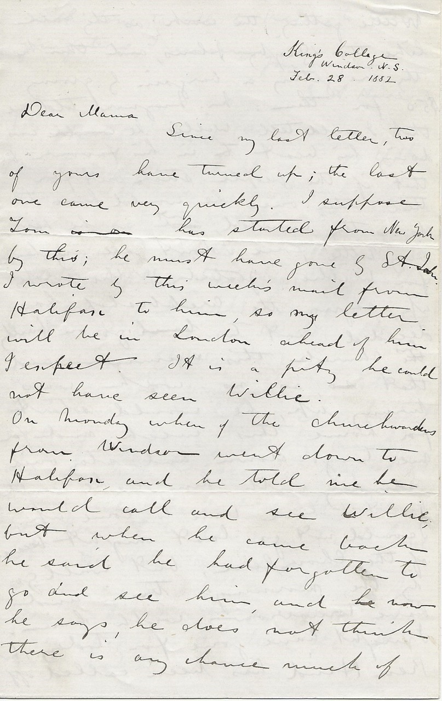

King’s College
Windsor, N.S.
Feb. 28, 1882
Dear Mama
Since my last letter, two of yours have turned up; the last one came very quickly. I suppose Tom has started from New York by this; he must have gone by St. John. I wrote by this week’s mail from Halifax to him, so my letter will be in London ahead of him I expect. It is a pity we could not have seen Willie.
On Monday when illegible the church workers from Windsor went down to Halifax, and he told me he would call and see Willie; but when he came back he said he had forgotten to go and see him, and now he says, he does not think there is any chance much of Willie getting the work, as they all like the Digby plans, and think they are getting a bargain by giving $50 for them: Mr. Maynard told me that I could tell Willie that he was doing his best in his favour, but if the people stuck out for the other ones he would have to do as they wanted; but as he has very little force, I don’t see any chance for Willie.
Yesterday Willie wrote up, saying the architect has decided not to go on building his church this summer, and that, as no work was turning up, he would start for home this week; and for me to go down and stay over Sunday with him, as he would not have time to come up. I could not go last night because of the choir, here, but will go by the morning’s train and have tomorrow with him. I might have gone for today, but Ken Hind has been called off to St. John to play the organ in the Mission chapel until after Easter (when their English organist is to be out), and so I do have to take full charge of the choir here.
I hope the crossing will keep good, so that Willie can be with you in two or three days. We have had a tremendous thaw here, the snow is nearly all gone, and most of the fields being quite bare; but it is now turning colder. Mr. Maynard has service every afternoon in the old church now, but poor old man, no matter how hard he tries, he cannot have services suitable for the season.
I was astonished at Frankie’s epistle; he will be writing Greek and Hebrew in the course of a few months at this rate; you ought to put brakes on him I think; I don’t think it is good for him to go on too fast (vide Herbert Spencer on Education). That book which you sent for came by last English mail.
Mr. Ellis’ address is at the head of his letter isn’t it; just Father Ellis, Mission House of S.S. John Evangelist, illegible, Bombay, India. The Harleys are from Bridgewater, a place on the coast below Halifax. They board over in Dr. Spencer’s house.
You speak about Mr. Raven never wanting to be remembered. A long time ago he gave me a standing remembrance permit, but I think it is stale repeating it every time, when he never speaks of it; you know you must make allowance for the slow movement of his brain, it is my opinion they are of somewhat thicker consistency than quicksilver, and need pressure to turn them in different directions; it would be all right I suppose if they could be thawed out a little more. All this term has been going out a great deal in Windsor (he never did at all before). The concert practices got him in with the people, especially with the Blacks; for a time he was quite taken with Miss Black who was over in Charlottetown, but he is getting over that now I think; his whole existence is in grooves.
I have not written to Mr. Ellis yet but ought to do so today. D.H. Hind from Georgetown is here now, he is going around as a paid agent for the Endowment fund; he thinks it can be raised in time. Wiggins about the richest man here in Windsor told Mr. Maynard he would give $2000.00 to the new church, if he was promised the right of renting a pew; Mr. Maynard intends having the church free, and so would not consent, and now Wiggins will not give a cent.
I had better not close this until I get down to Halifax in the morning and see Willie so the other page will do for additions. Remember me to all friends. With love to all & kisses to the youngsters I remain your loving son E.A. Harris
P.S.
Halifax. March 6th.
I am here at the Whiddens illegible with Willie, staying all night, and intend going up to Windsor by the early train in the morning. After a talk Willie has decided finally on going, and will leave here to come home on the day after tomorrow (Wednesday) we were both over at Mr. Stone’s to dinner. Halifax is a perfect hole of a place, dirty and dead at present; the streets in a fearful state; I don’t wonder at Willie wanting to leave it. He has made a good arrangement about the work here with Jost illegible; so that if Winnipeg is a failure, he can fall back on this.